Малик Хашимов · продюсер женских блогов
От политики к бизнес-аудитории
Разбор Вашего Instagram: что уже работает, куда идём и по какому методу.
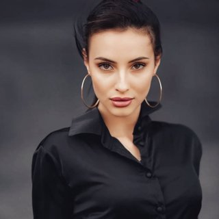
Сейчас основные просмотры дают опросы прохожих. Рядом с ними есть место для бизнес-тем.
Ваша личность в блоге пока почти не раскрыта. Через распаковку раскрываем её целиком: характер, люди, ценности, путь, принципы, тело, места, быт. На личность подписываются надолго.
После весенней паузы охваты возвращаем регулярным выходом роликов.
Актуальные, Telegram-канал, медиакит и свой продукт собираем по шагам, начиная с первого месяца.
Это основа, на которой строим дальше.
Блог, в котором Вы сами ведёте разговор: обозреватель без пропаганды и бывшая предпринимательница с шестью годами производства за плечами. Дальше амбассадорство или своё дело.
Блог, который Вы назвали образцом. Разобрали 1 547 публикаций, 1 364 видео, актуальные и Telegram.
В каждой линии повторяемость и живое взаимодействие с людьми.
Поиск партнёров, новый проект, запуск своего дела: как сериал, у которого есть начало, путь и финал. За таким следят и ждут следующую серию.
Предпринимательница, владелица бренда JAMALI, мама двух девочек. Начинали с 600 подписчиков.
Главное в этом кейсе: серии. Одна серия из пяти роликов дала около 14 млн просмотров и 72,7% всех новых подписчиков за первую фазу. Формат зашёл, и мы повторяли его, пока он не попал в массовую раздачу.
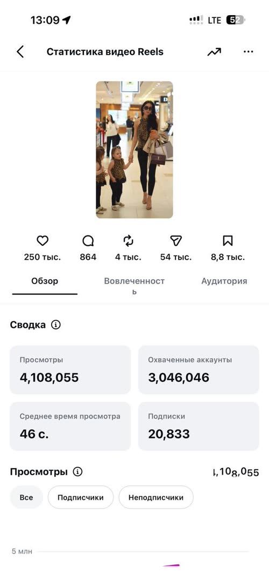
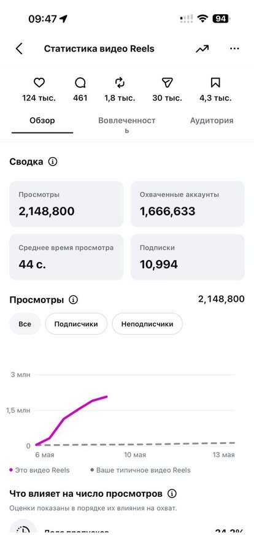
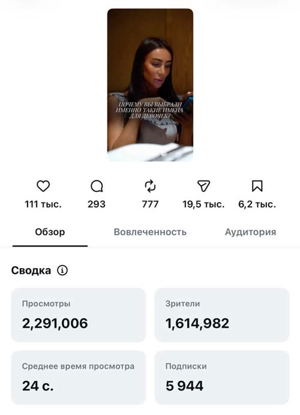
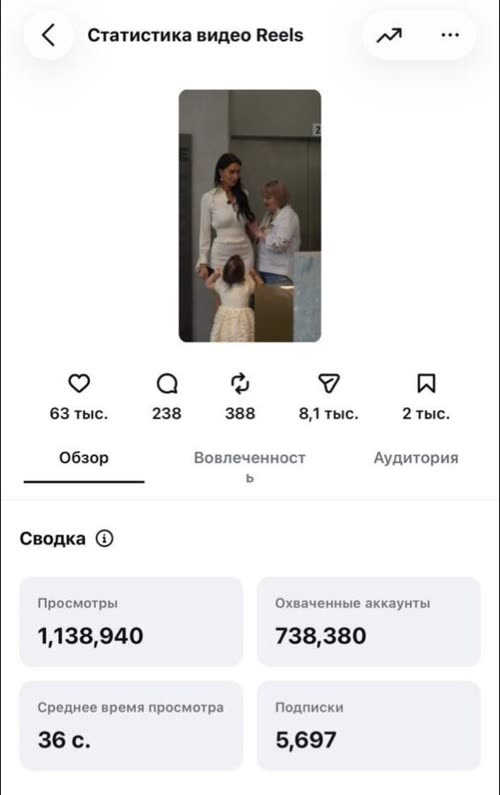
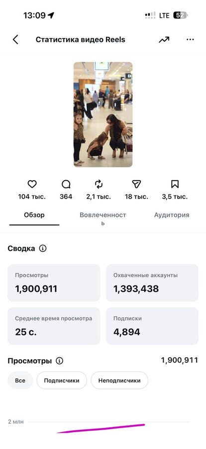
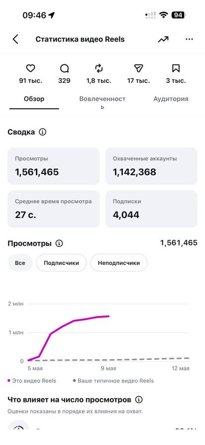
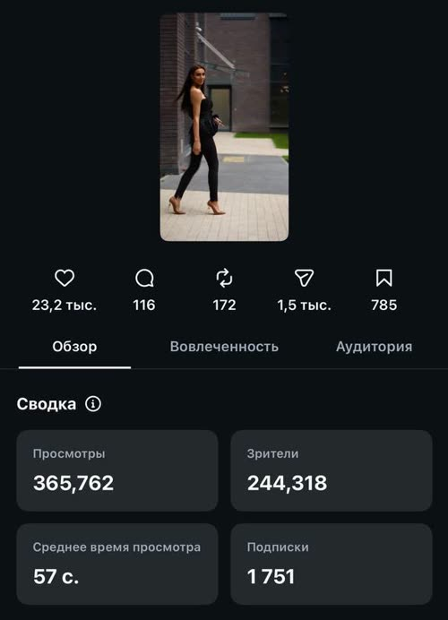
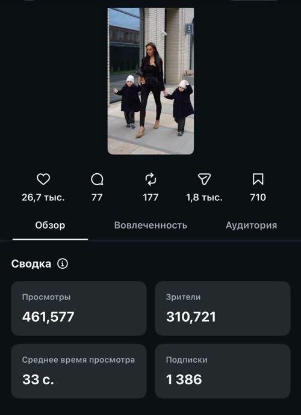
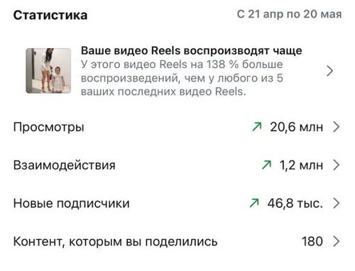
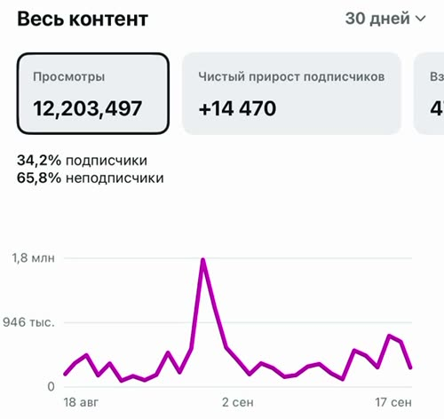
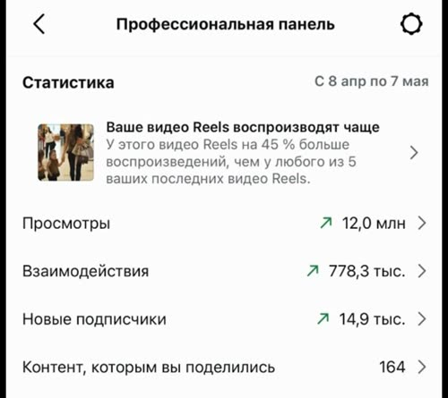
Блог с нуля: новый аккаунт, до этого блог не вела. Первые 10 дней публикаций.
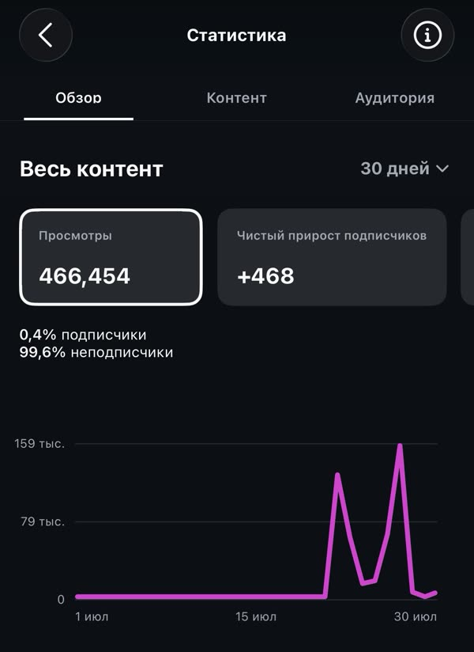
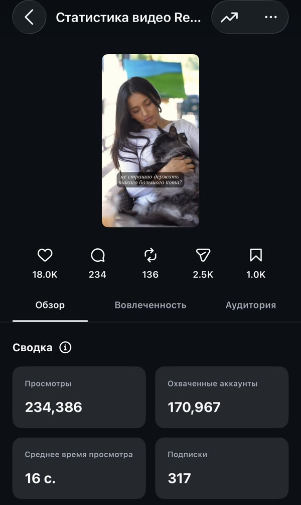
Клиентка, личный блог. Разговорный формат: живая речь в кадр, без трендов.
Живая речь держит зрителя. Ролики, где Вы говорите в кадр сами, тоже приводят подписчиков.
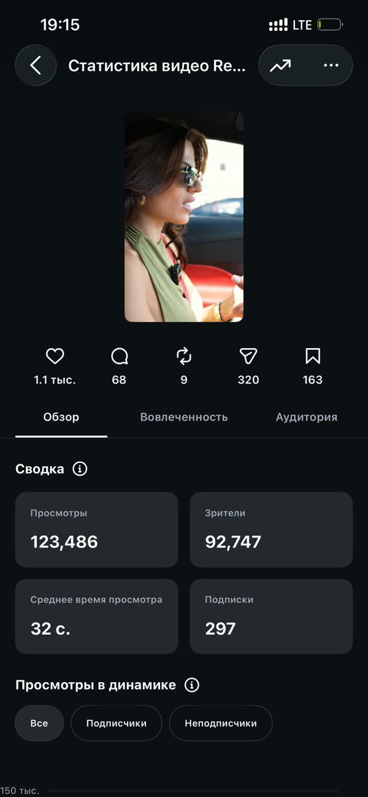
По итогам первого месяца выбираем продукт и переходим в формат запуска.
Под этот этап пересматриваем задачи, объём работы и условия сотрудничества.
Ваши слова о том, каким должен стать блог. К этому ведёт вся работа.
«медийный образ, закрытый телеграм канал, лидогенерация на свой продукт»
«сначала набрать бизнес-аудиторию и перейти или в амбассадорство, или открывать свою какую-то идею»
«в бизнесовую, но уже с медийностью»
«как я себя вообще ощущаю, и что я транслирую»
«выехать на рекламах, и дальше подкладывать попадание контента уже в перевод лида в бизнес»
«чтобы этот блог вырос, вот как я его вижу в своём идеальном представлении»
Колоссальный результат приходит на дистанции. Первый месяц закладывает фундамент, дальше рост аудитории, запуск продукта и масштаб.
разово
разово
в месяц, минимум 3 месяца
в месяц, минимум 3 месяца
1 800 $ в месяц
-10%1 700 $ в месяц
-15%